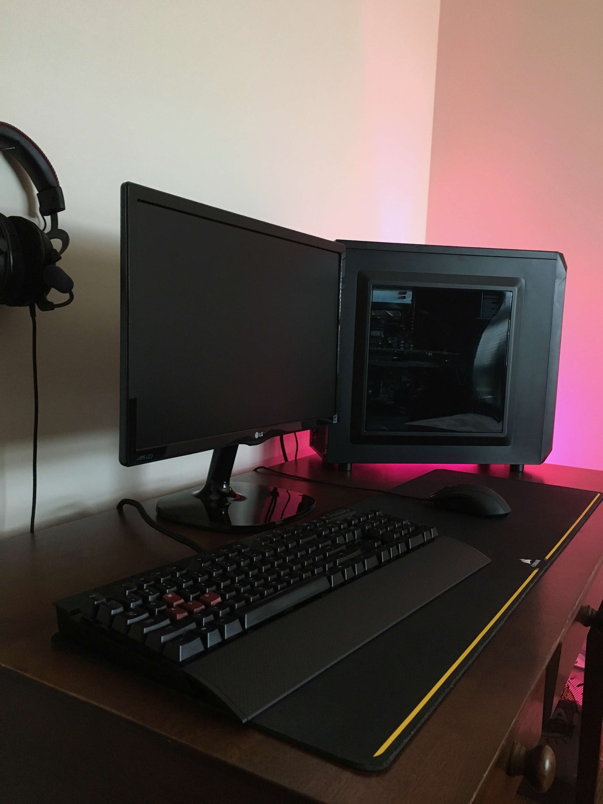

About Me
My name is Thomas Harrison, though I go by my middle name, Brooks. I am from the up state of South Carolina in a little city by the name of Rock Hill. That's about 30 minutes south of Charlotte to give a little reference. I have lived there for 18 years before coming to live down in the low country of Charleston for at least the 4 years if not more.
My Major and My Future:
I am a CIS major at CofC and the way I found out that I wanted to work with computers was about four years ago. My first experience with computers was when I decided to build one for myself so that I could play games with my friends online. Since then I have enjoyed watching videos about computer hardware on YouTube; seeing what the latest and greatest hardware is from various different hardware companies such as Intel. Form this experience I would say I know a fair bit about the hardware and I even plan to build a new computer, as soon a I get the money to pay for it. The picture you see on the right is my current setup.
Even though I want to make a career out of computer I'm not really sure exactly what I want to do with my degree after school. I not sure what companies to look at or even what type of job to pursue. it will be interesting as I go though the the rest of my years here at the College to gain connections with various companies as well as various other people who can help me find my way in the world of computers.
